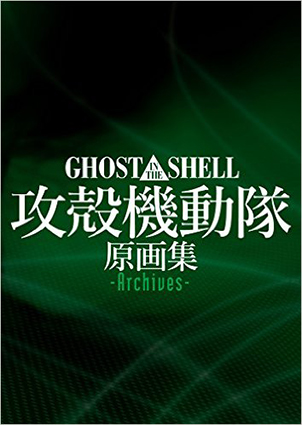
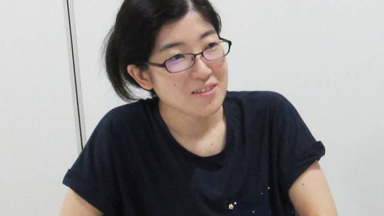

アニメ制作会社のアーカイブ部署に勤めている山川道子さん。アーカイブとは、制作されたアニメーションのカットなどの情報を集めて整理して提供する部署だ。現場を影から支えるこの仕事もまた、クリエイティブ職の一つと言えるだろう。彼女は何を考えながらアニメ制作現場に携わっているのか。アニメーションのみならず、社会全体との繋がりを考える彼女に、アーカイブ10年後の未来について伺った。
アーカイブは資料を整理して提供してゆくお仕事。
— アーカイブを始めようと思ったきっかけはなんですか？
私はもともと制作進行という仕事で入ったんです。1年弱続けた時に、会社が広報の部署をたてますということになったんです。制作進行だと体力的に辛いと思っていたので、相談をしたら、結果的に広報に移ることになりました。当時は立ち上がったばかりだったので、二人だったんです。ある時、広報の人数が増えたので「資料整理がメインだったあなたはアーカイブ担当になってください」と言われました。なので、アーカイブの仕事を始めた切欠は、そういうことが求められてきたからです。アーカイブやりますと意を決して言ったというよりは、会社の資料をまとめて、外に出す広報をしてたらアーカイブになってました。
— 広報から始まったんですね！広報は1からスタートということですが、教えてくれる方はいらっしゃらなかったんでしょうか。
雑誌や新聞で、新聞社の人が何が欲しいか言ってくれて、初めて何を用意するかわかるんです。だから沢山人の話を聞かなきゃいけないし、人が望んでることは何かを考えなきゃいけなかったんです。だから、みんなが先生でした。これからは、どういうものを用意すると便利か、経験者が伝えていかなければなりません。作る側に自分は回っているのだなとここ数年意識しています。
— 物作りにとってアーカイブはとても重要なんですね。
物を作らない側の人間も、ある意味必要だと思ってるんです。クリエイターの能力を100%生かすためには、余分な仕事は他の人がやったほうがいいんじゃないかなと思うんです。余分な仕事に自分の能力を生かせられるなら、そこを是非ともお手伝いしたいんです。今まで支える人はプロデューサーがメインだったけど、それ以外にアーカイブや、他の関係者がいて、お客さんに作品が届きます。その人たちが大事だという意識がもっと広がればいいなと思います。
アニメは未来の職業を作る。
— 我々短大2年生とかけて、最近2年間で一番楽しかったお仕事はありますか？
 GHOST IN THE SHELL / 攻殻機動隊 原画集 -Archives-
2014年に攻殻機動隊の原画集を作る時、アーカイブは私一人だったので、人を増やしてもらいました。そこでアーカイブチームをマネージャーとして動かすのが楽しかったです。自分が今後、どういう仕事をしていくんだろうとイメージを持てた仕事かも知れないです。固定人数・同じ人間ではなく、誰が入れ替わってきても、ある程度のクオリティが出せるような、そういうチームを作っていくことが自分には向いていると思えました。それで、納品して、いい仕事してくれたって言われるのが楽しいです。なので、攻殻機動隊の原画集は、大きな仕事だったし、楽しかったです。
— 最近ハマったことはなんですか？
宇宙ですね。昨日、大風呂敷を宇宙に上げて、木星の近くまで飛ばす企画に参加しました。もし、これが地球に帰ってくるとしても30年後だそうです。30年後は、企画に参加した研究者は誰一人残ってないんですよ。30年かけてやろうとしてることは、人を育てることなんです。研究成果を世界に伝えることも大切だけど、人を育てることも大切なので、同時にするんです。映画のフィルムができて100年経ちましたけど、当時の映像を我々は見ることができます。
つまり脈々と残してくれた人がいるってことですよね。アーカイブも常に、物を残す環境や人を作っていかなきゃいけない。 宇宙開発の人はみんなアニメ好きなんですよ。SFやアニメを見て、宇宙開発に行った人が多いんです。ということは、アニメ会社でアニメを作ることは、未来の仕事を作ってるものですよね。アニメが背負ってる責任は大きいんだなって思ってます。— 私も子供の頃に見たアニメはとても影響されます。アニメはテレビでいつでも観れるので、一番影響を受けてると思います。
今、アニメに影響を受けてない人はほとんどいなくて、アニメ以外の職業に就いた人でも、子供の頃に受けた影響で今の仕事をやってるんじゃないかなって思いますね。そう考えると、学校教育にも興味が湧いてきます。大人たちが用意した環境で、子供は成長して大人になるのですから、これを意識することを、アニメ会社（影響を与える側）が提示できるんじゃないかと思ったりします。アニメ業界は小学校で絵を教える授業をやったりしてるんですが、そこに＋αで、3Dプリンターで出力した立体物を、触って音を聞いてもらうことで、普段音だけで楽しんでる子供も、動きや形を想像できるんじゃないかなとか。触ったら、粘土細工で作ってみて、読み込んだら3Dアニメーションにすることだってできます。今アーカイブで、美術館や博物館などの人たちとコネクションを持とうとしていて、将来像として、そういう施設ができたらいいなと思ってます。色んな人たちが映像作品を色んな角度から楽しめるといいなと思います。
— これが未来の職業を作るということになるんですね。
これができるのは、たぶん日本だけなんじゃないかと思います。これだけ小さなアニメーション会社が点在しているのは日本独特なんです。だからこそ、海外の方が日本のアニメを取り寄せたり、日本に遊びに来てくれるんです。この可能性がある環境は、できれば長く続いて欲しいなと本当に思います。アニメは大切な財産だと思います。
— 最近の日本はアニメ文化を大切にされてます。この環境は長く続いて欲しいです。
私が小学校の頃は、母親にアニメから遠ざけて育てられました。「そろそろ大人になりなさい」と言われたけど、アニメ会社に就職して生活しています。好きなものを止められないなら極めたい。でも、中途半端に見てしまったので「見ていて当然」という環境に身を置いていた時期は、とても苦しかったですね。学校卒業から社会人になるまでの間に、海外旅行をしたんです。そしたら、フランスの大通りの両側に、映画の告知ポスターが貼ってありました。この時「いつかあそこに日本のアニメを出したい。」と思ったんです。未だ出せてはいないですが、映画祭で会社の作品を大きなポスターで貼らせてもらったりしてます。中学高校と絵が上手な人が周りに多かったので、こんな素晴らしい人を、皆に知ってもらうべきだと思ったし、海外旅行をして外国人にも知ってもらいたいと思いました。会社に入って、作品作りよりは宣伝が向いてるなと思って、宣伝活動を頑張りました。素材を用意すれば、描いた人を知ってもらえます。これがモチベーションにも繋がります。取材を申し込みたい気持ちにさせる資料を作って提供することが、アーカイブのやりがいでもあります。
持ち上げるでもなく、叩くでもなく、日々良いところを見ていく。
— これだけは譲れない！ことを教えてください。
中学高校はアニメ部で「どうにかしてこの素晴らしい絵の才能を見てもらいたい。」と思って部長をやって、15人の部活を70人にしました。絵を描くことに集中してしまう人が多い中で、その人たちの給料や単価の高い仕事を用意するためには、その人たちを知ってもらう必要があるんです。だから、アーカイブ専任になっても個人の仕事を集めるようにしたりしました。自分の周りにいる人たちのとても良いところを、沢山の人に見てもらいたいから、自分には何ができるかを考えてきてたんだなって思います。宇宙関係では、活躍している会社や研究している先生を少しでも広められるようにボランティアに協力しています。
これが私が人生かけて譲れないスタンスかも知れないですね。
皆さん、恥ずかしいって思っちゃうところが、あると思うんです。一緒に仕事してる時に「これが得意なんだね、すごいね」と一声かけるだけで、モチベーションが上がったりします。周りの人たちのいいところに気が付いたら、声に出してみるとか、メモするとか、自分が言うと、相手も自分のいいところに気が付いてくれたりしてる。私は、そういう世界になってくれたらいいなと思います。ちょっとでも悪いとこをみつけたら、全部叩くじゃないですか。持ち上げるでもなく、叩くでもなく、日々良いところを見ていく。そうすれば皆楽しく仕事ができると思います。
「残す」今。「使う」未来。
— 10年後アーカイブのお仕事はどのように変化していると思いますか。
10年ってすごく遠い気がするけど、ついこの間な気がします。でも、結構大きく変わっていて、10年前は「資料は残さなくても構わない。」という考えが圧倒的に多かったんです。私が「素晴らしい絵だから残しましょう。」と言っても、お金がかかるからいらないと言われてたんです。そこから、2011年の震災で、写真など沢山の資料が流されてしまいました。そういう時に、やはり資料は残して生きてた人の記録を取るべきなんじゃないかという話が出てきて、アーカイブが意識され始めたんです。そうなってくると、みんなどこかでアーカイブを聞いたことがあるので、資料をいただきに来ましたって言うと、当たり前に資料を渡してくれるようになったんですよ。その認識の違いは10年前には全然考えもしなかったんです。だから、10年間も仕事が残ると思わなかったです。今はむしろアーカイブが無くては困ると言われるようになったので、今は「残す」ことがメインになっているけれど、10年後は「使う」ことがメインになる時代になるんじゃないかなと思っています。youtube、ニコ動、図書館や美術館もひっくるめてアーカイブされているものを利用されているということが意識的、当たり前に行われれる時代になるのが10年後かなと思います。10年後はデジタル化が進んで、地球の反対側でも見れますね。でも、距離が離れてても見たいと思うものは、日本に置くという差別化をして、どっちも利用するような時代になると思います。それは私が見えている10年後ですし、できればもっと早く来て欲しいです。
— 今の時代はどんどん変化していく、先のことを考えることが大切なんですね。学生はまだそこまで視野が広がっていない気がします。
個人的な話ですが、29歳までは「給料も立場も自分の周りの環境も、一生これが続いていくんだ。」ということにある種の絶望感を覚えていました。でも30歳になった時、逆になんでもできるようになった気がしたんです。結局会社が望んでる範囲から、あまり離れなければ、実はなんでもしていいんです。会社がない日に、少しでも引っかかると思ったならば、行ってみます。アニメ制作会社に興味を持たれているんだと思われるかもしれないし、資料保存という点で仲間と思ってくれるかもしれないし、そうやって、5年くらい人脈を作ってみたんです。そしたら、今爆発的に巻いた種がいろんなところで生えてきました。アニメ分野だけでなく、別の分野の方でも資料を補完・使うという点ではみんな同じ悩みを持っています。アニメーターがアニメーションの会社で絵コンテや原画の紙を残すのも、図書館で紙を残すのも、技術はみんな一緒なので、それを共有していきましょうと。結局一つの会社で、一つの仕事を割り当てられてるけど、それだけにするか、違う分野にも関わっていくのかは本人次第です。全然とらわれる必要はないと思うんです。次のステップアップは別の会社に行くとすると、元いた会社にとっても、つてができます。そこを生かしてくれれば、会社としても損じゃないんです。日本人は、人と人との繋がりが好きなので、その繋がりを大切にしていれば、いろんなところで仕事ができると思いますよ。
絵を描くことだけが仕事ではない。
— アニメ業界を志す・興味を持つ人達に向けて一言お願いします！
アニメ業界と言っても、絵を描くことだけが仕事ではないんです。色を塗る人たちがいれば、撮影をする人、編集する人、宣伝する人、商品化をする人たちなど、周りで活躍している人たちをどんどん知ってほしいです。知った中で、自分が興味を持つ範囲や、今自分が持ってる技術で一歩踏み出したら出来るところを取っ掛かりに入って欲しいなと思います。苦手なものを勉強して、なんとかアニメを描く仕事に就いたけど、ごはんを食べれるほど描けない可能性もあります。今はたくさん仕事があるので、アニメを中心に置いた周りの仕事に、ちょっと関わってもらって、それを入り口に、一つの会社にいるのではなく、自分の興味があるところをどんどん伸ばしていって、新しい仕事を作ってもらって、やっていったらいいのではないかと思います。
— 山川道子さん、ありがとうございました！
